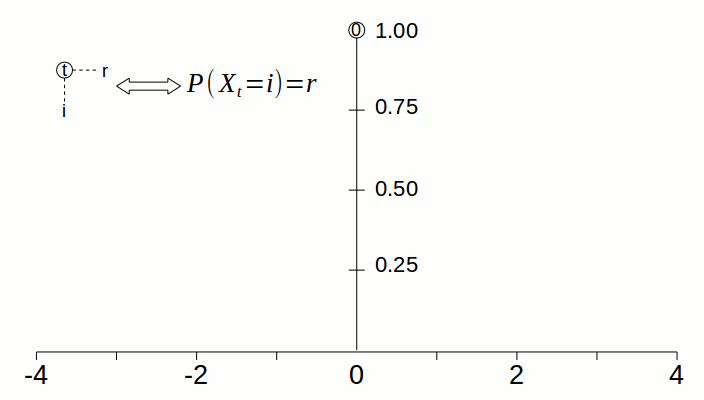

January 07, 2016
The List monad is usually used to model nondeterministic computations: it allows you to describe taking a choice from a set of possibilities and then merge the outcomes from each possibility together. In this post I’ll show how to use the List monad to simulate a canonical nondeterministic computation: a random walk.
Here’s a quick refresher on random walks before we discuss their implementation. Random walks are stochastic processes, which are collections of random variables indexed over time. For simplicity we’ll take a “random walk” to mean processes with the following properties:1
Runs on discrete time and a discrete state space. That means that the random variables in the process are indexed by the natural numbers, and can take integer values.
Satisfies the Markov property. Intuitively, the Markov property means that the probability that the process will inhabit some state in the future only depends on the current state of the process, not its history or the path that it took to get to the current state. Formally, the Markov property is the requirement that
\[ P(X_n = s_n | X_{n-1} = s_{n-1}, \ldots, X_0 = s_0) = P(X_n = s_n | X_{n+1} = s_{n-1}). \]
The first example of a random walk that we’ll discuss is the aptly named simple random walk. This process starts at 0 and moves left or right with equal probability. Formally, a simple random walk is defined as follows:
\[ X_0 = 0 \]
\[ P(X_{n+1} = s + 1 \mid X_n = s) = P(X_{n+1} = s - 1 \mid X_n = s) = 1/2. \]
We can create variations of the simple random walk. For example, what if we set the process so that once it reaches some state, it never leaves that state? We would have a random walk with absorbing boundaries, which we can characterize formally as
\[ P(X_{n+1} = b \mid X_n = b) = 1 \]
\[ P(X_{n+1} = s + 1 \mid X_n = s) = P(X_{n+1} = s - 1 \mid X_n = s) = 1/2. \]
where b is the boundary state and s is any non-boundary state.
What if instead of never leaving the boundary state, the process “bounces” off of the boundary? We get a random walk with reflecting boundaries, characterized formally as
\[ P(X_{n+1} = lo+1 \mid X_n = lo) = 1 \]
\[ P(X_{n+1} = hi-1 \mid X_n = hi) = 1 \]
\[ P(X_{n+1} = s + 1 \mid X_n = s) = P(X_{n-1} = s - 1 \mid X_n = s) = 1/2. \]
where lo is a “low” boundary, which bounces the process to the right, hi is a “high” boundary, which bounces the process to the left, and s is any non-boundary state.
The List monad can simulate a random walk by transforming a list of possible states that a random walk can occupy into a new list of possible states and the requisite probability of being in that state by applying one-step transition probabilities.2
To better understand how this works, I’ll employ an analogy. Think of the probability of a process being in a particular state as being a pile of sand. The higher the pile of sand, the higher the probability of the process being in that state (at a particular time). As the process runs, the pile of sand can be moved or spread around – maybe one big pile becomes two smaller piles in some other states – but, following Kolmogorov’s axioms, the total amount of sand that the process started with cannot change: all the piles of sand must add up to a height of 1.
Take the simple random walk. At the beginning of the process, there is only one pile of sand of height 1, which is located at 0. At timestep 1, the pile at 0 gets split in half; the halves are moved to the left and right, so there is a pile at -1 of height 0.5 and a pile at 1 of height 0.5. The animation below visualizes how the “pile of sand” gets spread from 0 to neighboring states as time goes by.

However, don’t let the analogy confuse you: the piles of sand represent the probabilities of being at particular states. There can be many piles of sand at any given timestep, since there can be many states for which there is nonzero probability that the process is in that state. But at any given time, the process is exactly at one state.
You can think of a transition function for a process as a rule for how to move around a pile of sand located at a particular state. For the simple random walk, a “sand-ified” version of the transition rule is: for a pile of sand located anywhere, split the pile in half, putting one half to the left and the other half to the right.
Here’s the version for a random walk with absorbing boundaries: for a pile of sand not located in a boundary state, split the pile in half, putting one half to the left and the other half to the right; do not move a pile of sand located at a boundary state.
Here’s the version for a random walk with reflecting boundaries: for a pile of sand not located in a boundary state, split the pile in half, putting one half to the left and the other half to the right; for the pile in the low boundary, move the entire pile to the right; for the pile in the high boundary, move the entire pile to the left.
We can take these descriptions and essentially transliterate them to Haskell:
srw :: (State, Probability) -> [(State, Probability)]
srw (x,p) = [(x-1,p*0.50), (x+1,p*0.50)]
absorb :: State -> State -> (State, Probability) -> [(State, Probability)]
absorb lo hi (x,p)
| x = lo = [(x,p)]
| x = hi = [(x,p)]
| otherwise = [(x-1,p*0.50), (x+1,p*0.50)]
reflect :: State -> State -> (State, Probability) -> [(State, Probability)]
reflect lo hi (x,p)
| x == lo = [(x+1,p)]
| x == hi = [(x-1,p)]
| otherwise = [(x-1,p*0.50), (x+1,p*0.50)]Note that we use the following type synonyms above:
type State = Int
type Probability = DoubleNow we can bind these functions directly to an
distribution (i.e., a list of state-probability tuples) and get the next
timestep. For the simple random walk, it looks like this:
[(0,1.0)] >>= srw
>> [(-1,0.5), (1,0.5)]So the output is exactly the probability distribution of \(X_1\). To get subsequent timesteps, we can
chain binds to srw:
[(0,1.0)] >>= srw >>= srw
>> [(-2,0.25), (0,0.25), (0,0.25), (2,0.25)]This looks almost right, except there are two entries for 0. This is
expected because there are two ways of going back to 0 after 2
timesteps: go left to -1 then right back to 0, or right to 1 then left
back to 0. Thus the first entry for 0 is the joint probability of
stepping to the left then stepping to the right; the second entry for 0
is the joint probability of stepping to the left then stepping to the
right. Since we only care about the total probability of being in some
state at some timestep, we marginalize and add these two joint
probabilities. We can do that generically with the
marginalize function:
marginalize :: Distribution -> Distribution
marginalize dist = M.toList $ foldr addPath M.empty dist
where sumProb (x,p) acc = maybe p (+p) (M.lookup x acc)
addPath (x,p) acc = M.insert x (sumProb (x,p) acc) accMarginalizing also ensures that our simulation is efficient; since the transition function processes every element of the list, by marginalizing we make the runtime linear relative to the number of possible states the process can inhabit instead of linear relative to the number of possible paths that the process can take – which is exponential relative to the timestep!
Now we complete our implementation by writing a function that chains n transition functions together, allow us to simulate the process up to any timestep n:
runWalk :: Int -> TransitionRule -> Distribution -> Distribution
runWalk n step init = foldl' apm init (replicate n step)
where apm acc f = marginalize (acc >>= f)Note that we use the following type synonyms above:
type Distribution = [(State,Probability)]
type TransitionRule = (State, Probability) -> DistributionNotice that we marginalize at the every step of the fold and we use
foldl' instead of foldr, which evaluates the
output of the binary function before appending it to the accumulator, to
make sure runWalk is efficient.
Alternatively, you can also use Kleisi composition to compose n monadic functions and get an n-step transition function:
runWalk' :: Int -> TransitionRule -> Distribution -> Distribution
runWalk' n step init = init >>= stepN
where stepN = foldr (>=>) (return) (replicate n step)However, while elegant, this is very inefficient especially when
n gets large, so I’d recommend using runWalk
instead since they are equivalent.
Let’s observe some simulations. Here’s a simple random walk up to 10 timesteps:
runWalk 10 srw [(0,1.0)]
>> [(-10,9.76e-4),(-8,9.76e-3),(-6,4.39e-2),(-4,0.11),(-2,0.20),(0,0.24),
(2,0.20),(4,0.11),(6,4.39e-2),(8,9.76e-3),(10,9.76e-4)]If that distribution looks familiar, it should be – it’s the binomial distribution! Here’s an intuition for why this is true: consider stepping to the right as a “success” and stepping to the left as a “failure”. The probability of moving along a certain path (of having a certain sequence of successes and failures) can be calculated by multiplying the probability of moving left or right in sequence. For example, if a path consists of left, right, left, then the probability of the process taking this path is \((1-p)p(1-p)\). Since in a simple random walk \(p = 1/2\), \(p = 1 - p\) and thus the probability of the path is \(p^3\). This gives us an even stronger property: the possible paths taken by the process for any timestep is uniformly distributed.
Notice, however, that given a certain path that makes the process end up in some state, the process will still end up in that state no matter how you rearrange the steps in the path. If the process steps left, right, left, it ends up at -1; but it will also end up at -1 if it steps left, left, right, or right, left, left. Thus, while paths are equiprobable, the probability of the process ending up at some state is determined by the number of ways you can rearrange the steps in a single path that ends in that state. This is given by the binomial coefficient, and hence the distribution of \(X_n\) is binomial. More formally, for a simple random walk
\[ P(X_n = i) = \binom{n}{(i+n)/2} \left ( \dfrac{1}{2} \right )^n \]
where \(i \in \{ -n, -n+2, -n+4, \ldots, n-4, n-2, n \}\).
Here is a random walk with absorbing boundaries after 1000 timesteps, where the boundary states are -5 and 5:
runWalk 1000 absorb [(0,1.0)]
>> [(-5,0.49),(-4,1.98e-23),(-2,5.20e-23),(0,6.43e-23),
(2,5.20e-23),(4,1.98e-23),(5,0.49)]So after a long time we can expect that the process will be in one of the two boundary states – this makes sense, since the longer it runs the more chances it has of reaching a boundary state, and once it does so it never leaves. There is equal probability of reaching one boundary state instead of another since the initial state of the process is equidistant to both boundaries.
Here is a random walk with reflecting boundaries after 1000 timesteps, where the boundary states are -5 and 5:
runWalk 1000 reflect [(0,1.0)]
>> [(-4,0.20), (-2,0.20), (0,0.20), (2,0.20), (4,0.20)]So after a long time the probability of the process inhabit some state is equal to all other states within the boundary are equal! Intuitively, you can think of a wave (of sand!) in a pool: the wave loses energy by hitting the walls of the pool, so that after a while it dies off and the pool becomes calm again.
I’ve only mentioned three transition functions here, but in reality the code we’ve outlined here can work for any arbitrary transition function. Check out the code in this Github repo and implement your own!
There are other processes such as Brownian motion, which has a continuous state space and runs on continuous time, that can be called random walks, but we’ll punt on those and focus on these simpler examples.↩︎
This is usually described either as a probability formula or, more commonly for processes with finite state spaces, the stochastic matrix P.↩︎